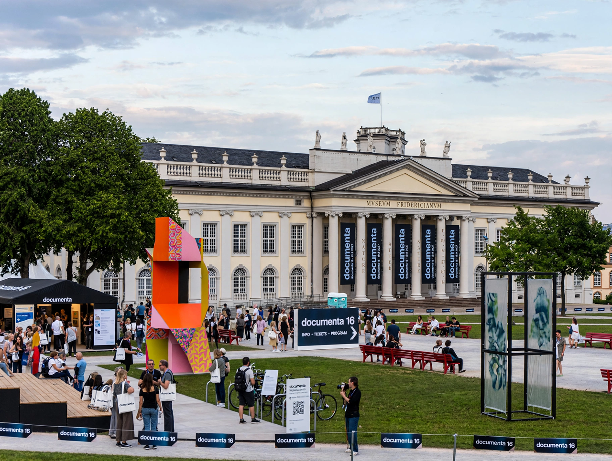

Documenta
Documenta is an exhibition of contemporary art held every five years in Kassel, Germany. Founded in 1955 by the artist and teacher Arnold Bode, it is regarded — alongside the Venice Biennale, which it was created partly to rival — as one of the most important recurring exhibitions in the world. Each edition is shaped by a single artistic director and runs for 100 days, earning it the nickname "the museum of 100 days".

| Documenta | |
|---|---|
| Location | Kassel, Germany (documenta 14 also Athens) |
| Founded | 1955, by Arnold Bode |
| Frequency | Every five years |
| Duration | 100 days |
| Main venue | Fridericianum |
History
The first documenta (1955) presented the modern art that Nazi Germany had condemned as "degenerate", reconnecting post-war West Germany with European modernism; it drew some 130,000 visitors. Harald Szeemann's documenta 5 (1972) recast the exhibition as a themed, curator-driven event and remains a landmark of curatorial practice. Catherine David's documenta X (1997) turned toward politics and globalisation; Okwui Enwezor's Documenta 11 (2002) expanded the show into a postcolonial, multi-platform project across several continents and is often credited with globalising the exhibition format.
Documenta 14 (2017), directed by Adam Szymczyk, was split between Kassel and Athens under the title Learning from Athens. Documenta fifteen (2022), curated by the Indonesian collective ruangrupa around the communal principle of lumbung (rice barn), was overshadowed by a major controversy over antisemitic imagery in a banner work, which was removed, prompting resignations and a national debate in Germany about art, memory and censorship.
Significance
Because it occurs only every five years and hands unusual freedom to its director, each documenta is read as a diagnosis of the state of contemporary art. The exhibition transforms Kassel — a mid-sized city in Hesse — for a summer, drawing close to a million visitors in recent editions.
See also
Recreated from memory as part of the muse-webcrawl project.